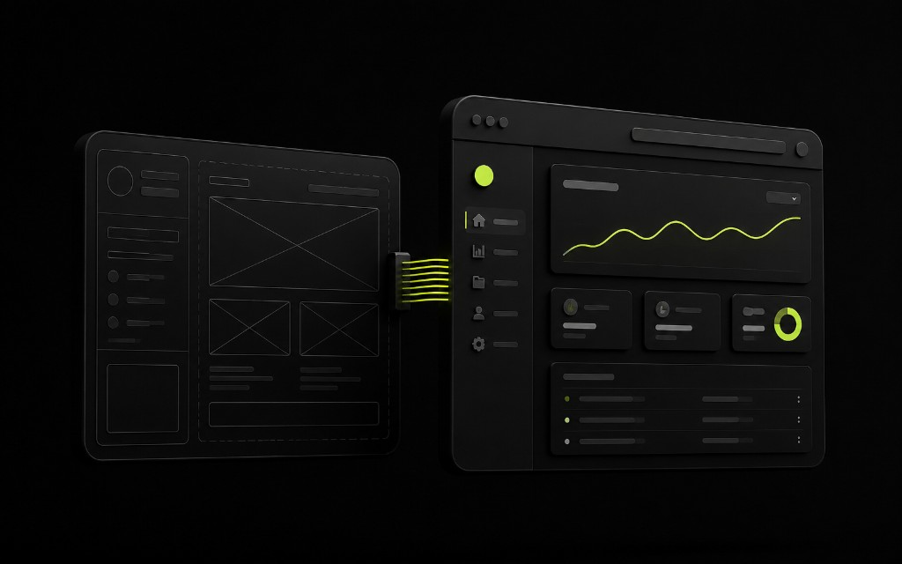

Большинство переделок — из дыр в handoff
Макет красивый, срок горит, а в проде вдруг «не так». Обычно виноват не злой разработчик, а неполная передача: нет hover, нет пустых состояний формы, нет мобильной версии ключевых экранов, картинки в низком разрешении. Для лендинга в Ташкенте это превращается в неделю переписок вместо заявок.
Хороший handoff — это договорённость о правде: что pixel-perfect, что можно упростить, какие состояния обязательны до релиза.

Что должно быть в пакете передачи
- Актуальные фреймы desktop + mobile, не устаревшие копии.
- Состояния: hover/focus кнопок, ошибки формы, success, пустые блоки.
- Типографика и цвета как токены/стили, а не «примерно вот так».
- Экспорт ассетов: SVG/PNG нужного размера, без «достань из скрина».
- Поведение: якоря, sticky-хедер, модалки, что анимируем, что нет.
Отдельно опишите контент-ограничения: длина заголовка, что делать если отзыв длиннее, как выглядит список услуг из 2 vs 8 пунктов. Иначе вёрстка ломается на реальных текстах из брифа.
Общий язык дизайна и разработки
- Созвон 30 минут на спорные экраны до старта вёрстки.
- Один источник правды (файл/страница), без параллельных версий в чатах.
- Чеклист приёмки: отступы, состояния, скорость картинок, форма.
Если дизайнит getdesign, а собирает getsite — правила те же: меньше сюрпризов на стыке, больше явных решений. SEO и аналитика тоже часть handoff: где title, где H1, куда ведёт CTA.
Типичные сюрпризы
Шрифт без лицензии/файла. Иконки только растром. Форма нарисована, но не описана логика отправки в Telegram-бот. На мобильном сетка «сама сложится». Таких дыр хватает, чтобы сорвать релиз. Закрывайте их до спринта, не в день деплоя.
Когда не надо ждать идеал
Не блокируйте разработку из‑за идеального фавикона, если ядро экранов и состояния формы готовы. Не добавляйте новые секции в середине вёрстки без пересборки сроков. Лучше зафиксировать freeze на UI и копить правки пакетом.
Чёткий handoff экономит деньги сильнее, чем скидка на часы. Это часть процесса продукта, а не «файлик дизайнеру в Telegram».
Приёмка: как не спорить о пикселях вечно
Договоритесь о допусках: где нужен pixel-match, а где важнее ритм и система отступов. Иначе приёмка превращается в охоту за 2px. Для маркетингового лендинга критичны состояния формы, читаемость, CTA и скорость картинок — не идеальная тень на пятом экране.
Соберите совместный чеклист дизайнера и разработчика: шрифты подключены те же, цвета совпадают с токенами, адаптив на 360/768/1280, hover не «ломает» layout, фокус виден с клавиатуры. Доступность базовая тоже часть handoff — хотя бы контраст и размеры зон клика на мобильном.
Контент в макете часто «идеальный»: короткие слова, ровные строки. Прогоните реальные тексты из брифа. Если заголовок на двух языках длиннее — нужна стратегия переноса, а не сюрприз в проде. То же с цифрами в кейсах и длинными названиями услуг.
Анимации описывайте словами и триггерами: когда запускается, можно ли отключить при reduced-motion, не блокирует ли ввод в форму. Лишняя «живость» легко убивает производительность и мешает SEO косвенно через скорость сайта.
После передачи не плодите параллельные правки в чате. Один список изменений — один ответственный. Так handoff остаётся рабочим процессом, а не археологией скринов из Telegram. Для команд getdesign + getsite это критичный стык качества.
Совместная ответственность за продукт
Handoff ломается, когда дизайн «сдал» и ушёл, а разработка «принимает» в одиночку. Лучше короткие синки на спорных экранах и общий превью-стенд. Так состояния формы и мобильные крайние случаи всплывают раньше продакшена. Для лендингов с анимацией это особенно важно: то, что красиво в прототипе, может тормозить в браузере.
Зафиксируйте freeze-дату. Правки после freeze идут пакетом со сдвигом сроков. Иначе вечный «ещё один блок» убивает и дизайн-системность, и скорость сайта. Клиент должен видеть правило заранее — это часть брифа, не сюрприз.
Передавайте не только UI, но и контентные правила: тон текста, запретные формулировки, языковые версии. Иначе разработчик подставит рыбу, а согласующий начнёт войну в день релиза.
В конце handoff — демо с формой в тестовый Telegram-чат. Если демо без заявки, handoff не завершён. Визуал без воронки снова станет музейным экспонатом.
Шаблоны артефактов, которые стоит завести
Страница статусов компонентов: что готово к вёрстке, что в правках, что заморожено. Таблица экспорта ассетов с именами файлов. Короткое видео или gif спорных микроанимаций. Список не-целей: «не делаем тёмную тему в MVP».
Эти артефакты звучат бюрократично, но на практике они короче бесконечной переписки. Для связки дизайн→разработка в рамках getdesign и getsite мы видим меньше сюрпризов именно когда список явный.
Добавьте в handoff требования к аналитике и SEO: где H1, какие якоря, какие события. Дизайн без этих меток провоцирует поздние переделки структуры — самые дорогие.
И проведите приёмку на реальном контенте и реальной форме. Красивый статичный стенд без заявки — ещё не продукт. Финал handoff = рабочий маршрут до Telegram/CRM.
Мини-регламент правок после передачи
Правки до вёрстки — в макете. Правки во время вёрстки — только критичные, списком. Правки после staging — пакетно с оценкой срока. Срочная «красная кнопка вместо синей» в день рекламы допустима, но должна быть исключением, иначе команда живёт в пожаре.
Каждая правка проходит проверку: не ломает форму, не утяжеляет hero, не сдвигает H1 и CTA. SEO и аналитика — часть регресса. Дизайн без этой линзы снова вернёт сюрпризы.
Закройте handoff коротким отчётом: что передано, что сознательно упрощено, какие риски остались. Прозрачность бережёт доверие клиента и внутреннюю культуру getdesign/getsite.
Короткий вывод: хороший handoff снижает цену разработки сильнее любой скидки. Передавайте состояния, ассеты и правила контента, согласовывайте freeze, принимайте на реальной форме. Дизайн и код — один продукт. Если на стыке тишина, сюрпризы неизбежны. Фиксируйте договорённости письменно и берегите маршрут заявки при любой визуальной правке.
Практический совет напоследок: зафиксируйте ответственного и дату следующего разбора цифр. Без даты улучшения растворяются в операционке. Для команд в Ташкенте короткий ритуал раз в две недели — достаточная частота, чтобы сайт, лендинг или Telegram-бот не застаивались и продолжали приносить заявки.